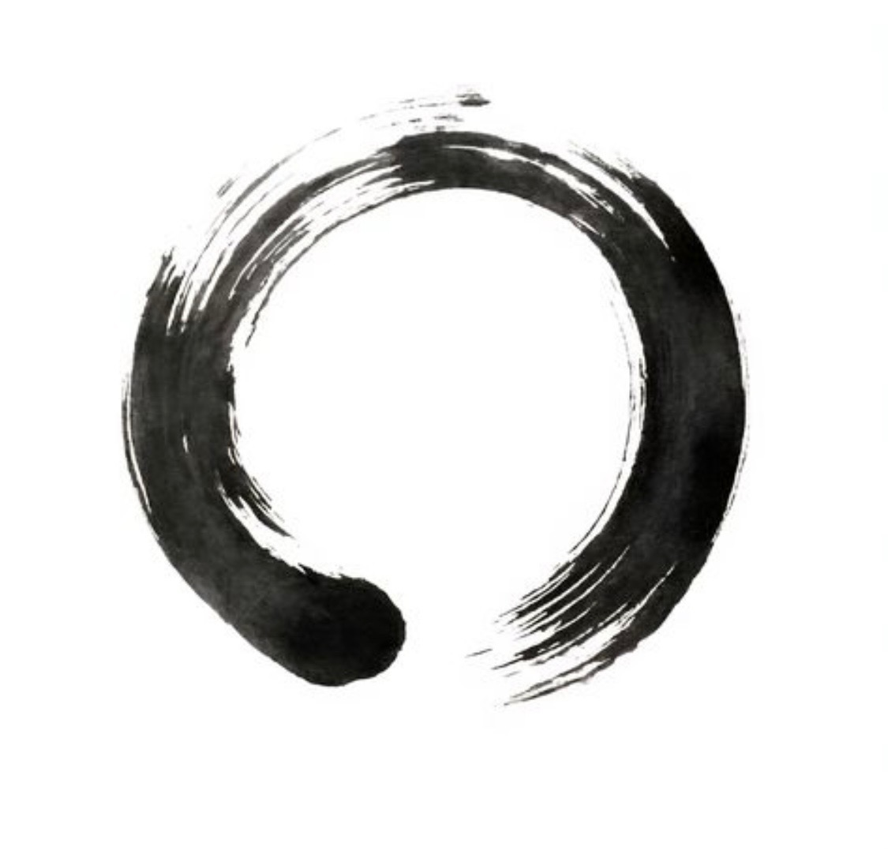
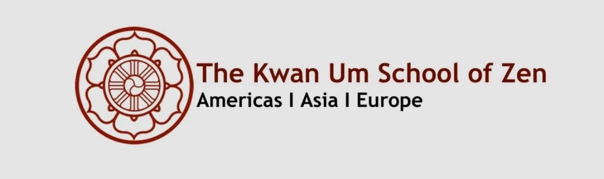

When: Tuesdays 6:30pm-7:30pm
Where: Join us at Schuykill Friends Meeting 37 N Whitehorse Rd, Phoenixville, PA 19460
Schedule: Chanting: 6:30-6:40 Sitting meditation: 6:40-7:00 Walking meditation: 7:00-7:10 Sitting meditation: 7:10-7:30
